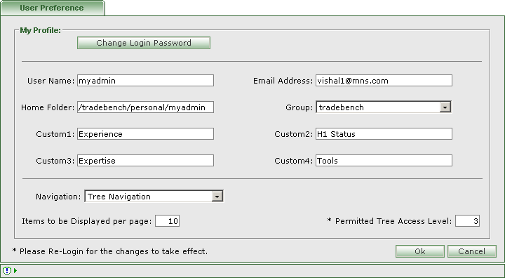

| What is User Preference? |
|
 |
User Preferences page |
| General User Preference Information |
| Name | Min Length | Max Length | Description | Comments |
|---|---|---|---|---|
| Login Password | - | - | Facilitates the logged-in user to change the password.
|
|
| User Name | - | - | Unique User Name. | Non Editable |
| Email Address | - | - | Mailing address of the user. | Editable |
| Home Folder | - | - | Home folder for the logged-in user. | Non Editable |
| Group | - | - | Group to which logged-in user is assigned to. | Non Editable |
| Custom1 | - | - | Allows setting the first custom field for new resume,edit resume page . | Editable only for administrator. |
| Custom2 | - | - | Allows setting the second custom field for new resume,edit resume page . | Editable only for administrator. |
| Custom3 | - | - | Allows setting the third custom field for new resume,edit resume page . | Editable only for administrator. |
| Custom4 | - | - | Allows setting the fourth custom field for new resume,edit resume page . | Editable only for administrator. |
| Navigation | - | - | Allows selection of a navigation type for accessing Docucentral. | Required |
| Items to be displayed per page | - | - | Allows the number of rows to be displayed per page. | Required |
| Permitted Tree Access Level | - | - | Allows fetching number of levels of the tree. | Required |
| 'Ok' button | - | - | Press 'Ok' to save the Modified Preferences, the Preferences will be saved and Webtop page will appear. | - |
| 'Cancel' button | - | - | Press 'Cancel' to abort Modifying User Preferences. | - |